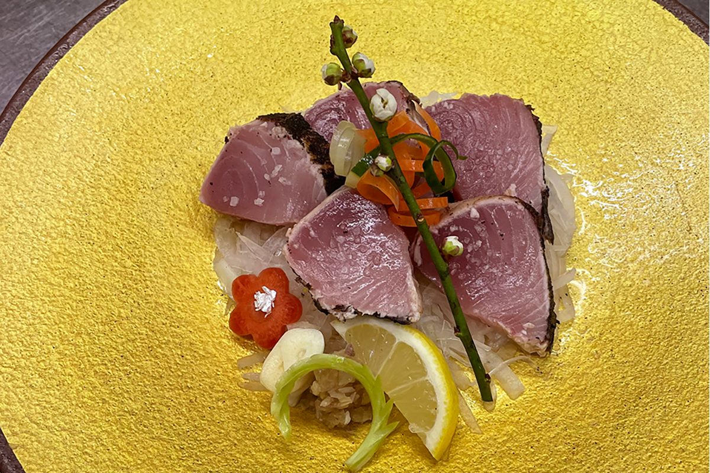
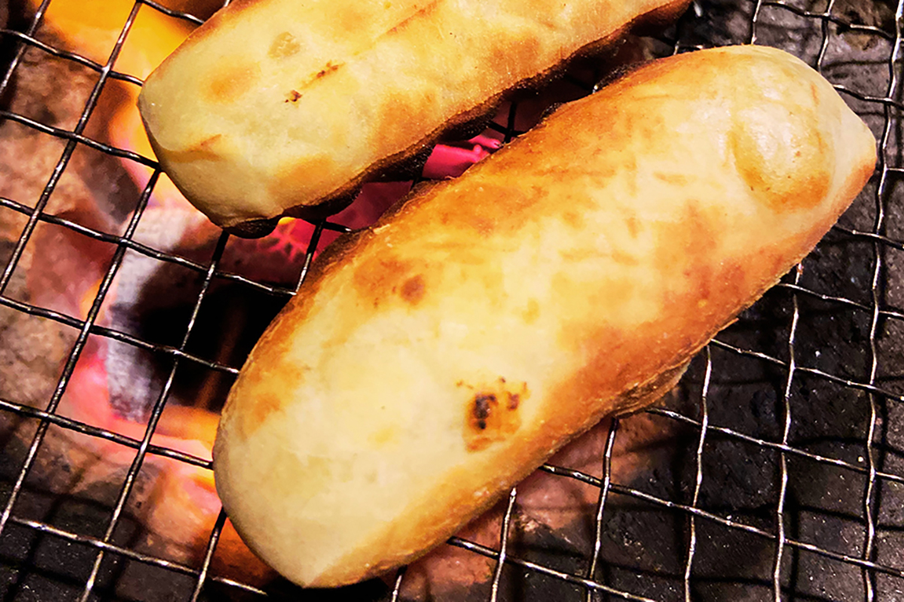
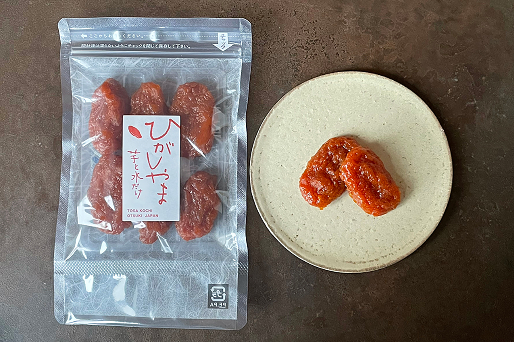

Префектура Коти · Симанто и Оцуки · еда
Татаки из бонито и десерты из батата: что едят в Коти

Кухню родной префектуры для нас разбирает исследователь кулинарии и сладостей: татаки из бонито, бататные лакомства и сёла, где батат умеют хранить до следующего лета.
Рыба
Татаки, но не только
Про Коти первым делом вспоминают татаки из бонито, филе, обожжённое снаружи на открытом огне. Вкус у него и правда отменный, а местные знают о бонито всё: в сезон рыба попадает на стол едва ли не каждый день, как самое обычное домашнее блюдо.
Но сезон решает всё: зимой и весной на стол выходят рыбы, которым бонито уступает. Таверна «Сёкусуйтэй Мотоя» в городе Симанто перечисляет их без паузы.
«С холодов до весны это монцуки-сума и хагацуо».
таверна «Сёкусуйтэй Мотоя», город Симанто
Сума с тёмным узором на спине, монцуки-сума, почти не выходит за пределы здешних рынков: в других префектурах её встретить сложно. Сама таверна работает при рыбооптовом хозяйстве «Мотоя» из порта Тоса-Симидзу, и улов, поднятый на борт утром, к вечеру уже на тарелках. Татаки из рыбы дня здесь привычны так же, как дома.
Сёкусуйтэй Мотоя
- Адрес
- префектура Коти, город Симанто, Накамура-Сакаэмати, 22-1-6
- Телефон
- +81 880-35-0358
- Часы работы
- 18:00–23:00
- Выходные
- воскресенье
Батат
Сладкий батат: жареный, сушёный, в лепёшке
Второе крепкое слово местной кухни: батат. Толстые ломтики, обмакнутые в чуть сладкий кляр и обжаренные до хруста, зовут имотэн. Это скорее лакомство, чем гарнир: в здешних тэмпура-лавках имотэн берут поштучно и едят прямо на улице, как горячую котлету из мясной лавки. Тэмпура в Коти означает сацума-агэ, жареные шарики из рыбы и овощей, и бататная версия держит марку. Такие лавки, к сожалению, исчезают. Зато в продаже появился готовый «имотэн-ко», смесь для кляра, с которой имотэн получается и дома.
Сушёный батат, хосиимо, здесь зовут «хигасияма». Вид у него простоват, а трудозатрат огромные. Печь собирают из железной бочки, распиленной пополам, на неё ставят котёл диаметром больше метра, разводят дровяной огонь и варят очищенные небольшие клубни целиком, с холодной воды, несколько часов, пока выварившийся крахмал не впитается обратно. Потом батат сушат на холодном ветре. Глянцевый блеск и упругая плотность мякоти стоят этих усилий.
В регионе Инан на западе префектуры батат хранят по-другому. Сваренный на пару батат режут толстой соломкой и сушат до каменной твёрдости, чтобы хватило до следующего года. Потом вымачивают, готовят на пару вместе с клейким рисом и толкут с сахаром: получается имоти. Цвет лепёшки зависит от сорта, сорт с морковной серединкой красит её изнутри. Раньше имоти толкли дома; теперь за дело взялись цеха при моти-лавках и женские отделения сельхозкооперативов, а под конец года заказы валят стеной. Кто-то приносит свой подсушенный батат прямо в цех, чтобы его растолкли вместе с рисом. Готовую лепёшку размером с ладонь, сантиметров десять на двадцать, режут на ломтики толщиной в два сантиметра и подрумянивают на решётке над очагом-хибати, обсыпав кинако, соевой мукой.

Попробовать бататные сладости без поездки по сёлам тоже можно. Интернет-магазин Taiyo to Umikaze пересылает по стране имоти мастерской моти «Косиба» из Тоса-Симидзу, которая и придумала имоти: набор стоит 1 700 иен. А в мити-но эки «Оцуки», придорожной стоянке с рынком на юго-западном краю префектуры, берут хигасияму, местную «природную карамель», по 970 иен.

Мити-но эки «Оцуки»
- Адрес
- префектура Коти, уезд Хата, посёлок Оцуки, Хироми, 2610
- Телефон
- +81 880-73-1610
- Часы работы
- 8:30–17:00
- Выходные
- нет